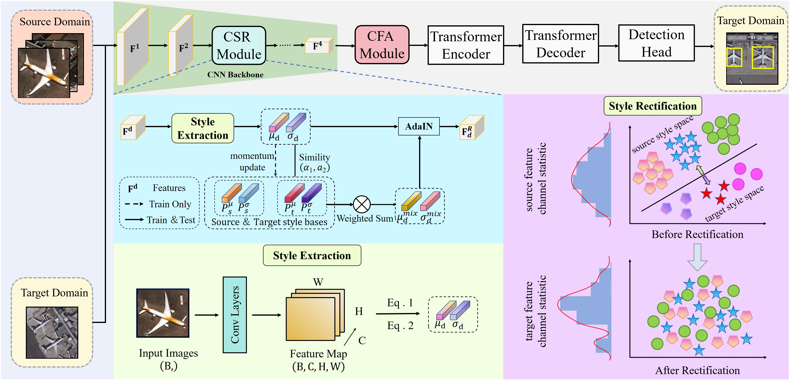
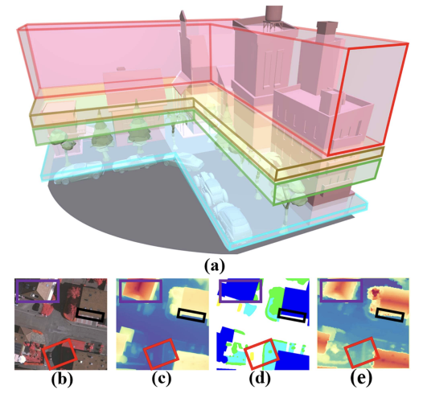

{kind=link}
👋 About Me
I am an incoming Ph.D. student (admitted) in Control Science and Engineering at North China University of Technology (NCUT), Beijing, China, starting in September 2026. I am currently completing my M.S. degree in Communication Engineering at NCUT. My research interests lie in Remote Sensing Object Detection, Few-Shot Learning, and Cross-Domain Adaptation.
🔥 News
- 2026.09: 📖 Admitted to Ph.D. program in Control Science and Engineering at North China University of Technology.
- 2025.09: 🏆 Awarded the National Scholarship (国家奖学金, Top 1%) for graduate students.
- 2025.10: 🎉 One paper accepted by IEEE Journal of Selected Topics in Applied Earth Observations and Remote Sensing (JSTARS, IF = 5.3).
- 2025.05: 🎉 One paper accepted by IEEE Transactions on Geoscience and Remote Sensing (TGRS, IF = 8.6).
- 2023.09: 📖 Started M.S. study in Communication Engineering at North China University of Technology.
📝 Publications
My research focuses on Few-Shot Cross-Domain Object Detection for remote sensing imagery.
{kind=link}

FSDA-DETR: Few-Shot Domain-Adaptive Object Detection Transformer in Remote Sensing Imagery
IEEE Transactions on Geoscience and Remote Sensing (TGRS), 2025 (Accepted: 2025.05.28)
Binbin Yang, Jianhong Han, Xinghai Hou, Dehao Zhou, Wenkai Liu, and Fukun Bi
[PDF]
[Code]
{kind=link}

Exploring the Role of Depth Information From DAM in Diverse Remote Sensing Semantic Segmentation Tasks
IEEE Journal of Selected Topics in Applied Earth Observations and Remote Sensing (JSTARS), 2025 (Accepted: 2025.10.10)
Dehao Zhou; Fukun Bi; Xinghai Hou; Xianping Ma; Zhiliu Yang; Binbin Yang
[PDF]
🏆 Selected Honors
- 2025.09: National Scholarship (Graduate) (国家奖学金, Top 1%), Ministry of Education of China
- 2025.09: First-Class Academic Scholarship (Graduate) (研究生一等学业奖学金), North China University of Technology
- 2024.09: Third-Class Academic Scholarship (Graduate) (研究生三等学业奖学金), North China University of Technology
- 2023.09: Third-Class Academic Scholarship (Graduate) (研究生三等学业奖学金), North China University of Technology
- Major Ranking: 5 / 78 | GPA: 3.95 / 4.0
📖 Educations
- 2026.09 - 2030.06 (Admitted), Ph.D. in Control Science and Engineering, North China University of Technology, China.
- 2023.09 - 2026.06, M.S. in Communication Engineering, North China University of Technology, China.
- 2019.09 - 2023.06, B.S. in Data Science and Big Data Technology, North China University of Technology, China.